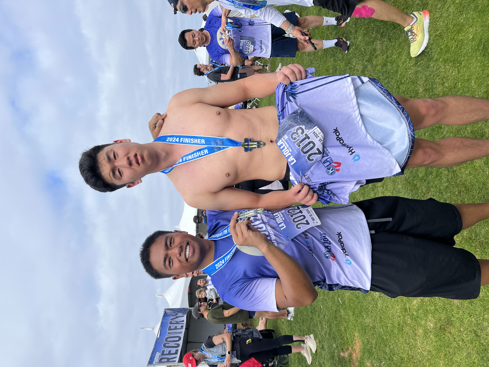

|
Date posted: May 26th, 2024
Week 9 of Spring 2024, Sunday.
Things to do:
DRP: Presentation slides
DSC 291: Presentation slides + report
ECE 171A: HW7 due Wednseday night
ECE 276B: HW3 due Sunday night + PR3 due Tuesday of finals week
MAE 288A: HW4 due Thursday night
MATH 102: do the HW
MATH 140C: do HW due today
MATH 144: HW7 + midterm Tuesday
MATH 294: HW4 due next Monday
|
 |
I'm glad I finish this week on a good note. First of all, I ran a half-marathon, an entire 13.1 miles!
The course was brutal. I held a comfortable 8:30 pace until there was a 400 ft elevation gain up Torrey Pines reserve.
I look back at it, and I can finally say that it was quite the experience. I would definitely do it again if there wasn't so much incline.
I had these massive blisters on my feet that finally popped, so I can walk normally. Don't worry, all of the skin grew back already.
And I did that race right into midterm week. I actually finished MATH 140C and ECE 171A midterms, which is very good.
Only issue is that I skipped two ECE 171A lectures, so I'm a little behind. In fact, I'm actually pretty behind on a lot of things.
I need to catch up on probably all of my classes and study for the MATH 144 midterm, which I NEED to do well on.
I realized that Fourier analysis is not something I can just use intuition to solve. Probably going to spend a good 5-6 hours on studying.
Otherwise, there was an ECE 276B project due, and I actually got it done.
I will be posting the report soon, but there's some extra stuff I want to put in.
I don't know what to say. I don't feel burnt out (or at least I tell myself that I'm not), but I don't feel great either.
I definitely feel very satisfied, in fact, very proud of what I'm achieving so far, but something always feels missing.
It's not like I didn't go out of anything. I made a ton of new friends and met a ton of new people this school year,
and yet I don't feel very fulfilled in one way or another.
So apparently my petitions for ECE 15 and ECE 100 did NOT go through, and they told be two weeks ago in the VAC message.
I guess it is my fault, but I don't know why they didn't reject or close the petition on the petition portal.
I was thinking that it was still under consideration, but I guess there is no one to blame but me. I guess I should actually read emails.
Otherwise, I submitted another petition to replace ECE 15 with MAE 288A and ECE 100 with MATH 294. I will likely hear back this Tuesday.
|
One thing that I noticed is that I've been very judgemental lately, so I think I need to reflect on that a little more.
I think I haven't been destressing with recreational activities, but what is recreational at this point.
I think that it is very hard to pinpoint what is something that I truly enjoy whether it be socializing with people or learning new things.
Maybe this is indeed burn-out from doing anything, and I just need a day of doing absolutely nothing.
Only problem is that this goes against my values of being productive, so this is a dilemma.
Whatever my issue is, I'll try to diagnose it after finals. There is no time to wait. I must move forward.
On the bright side, I think I have successfully detached from playing League on a normal basis.
I don't feel the need to play spontaneously anymore. I don't feel stressed for not playing or anything.
I think that my approach to games is just a medium for social interaction and fun rather than a coping mechanism for my stress.
I guess this is good to extent since I lost an outlet for destressing. However, this is not my concern just yet.
For anyone who is wondering what I'm doing over the summer, here's a nice list:
COSMOS teaching/lab assistant (July)
ECE 5 course staff (August)
ECE 101 course staff maybe (August)
ECE 45 course staff (July - August)
Finish paper with Poveda
Maybe do more research with Prof. Atanasov or Zheng
TritonAI Boat+Drone localization design project
Look into postgraduate and PhD programs + apply to jobs
Learn how to draw (1 hour a day!!!)
I have some ambitious goals that I want to fulfill over the summer. I think I got this.
Anyways, here's a good quote that I thought of these past few weeks.
“I touched the stars, and saw the glorious light of a thousand suns!
Now, blinded by this elegance, how could my purpose be anything… but dark…” - Aatrox
|